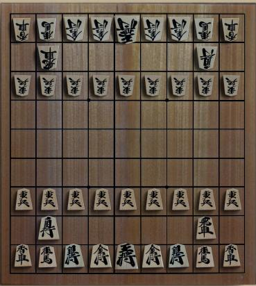
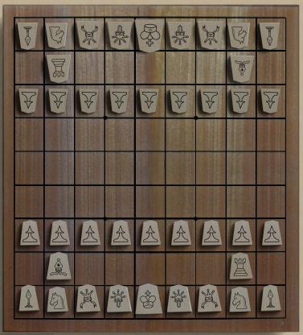

Shogi
Shogi is the member of the Chess family which is most widely played
in Japan. If you look past the surface details, the
overall board plan and movement style is similar to chess;
but there are a lot of interesting details.
The board is 9x9
rather than 8x8. Players start with 20 pieces each,
which are 5-sided and traditionally inscribed with Kanji
characters. (At Boardspace, the default pieces are
labeled with westernized images, but the traditional set is
also available.).
The pieces have other unusual characteristics
. Most of the pieces can be promoted, and
become more powerful, when they reach the 7'th rank.
The most unusual feature is that captured pieces are not
"out of the game" as in chess, but can be returned to the
game by dropping them almost anywhere on the
board. Where Chess trades down and simplifies,
Shogi becomes ever more complex as captured pieces parachute
into the middle of the fray.
Checkmate is
similar to Chess.
Complete rules can be found here.
Robots:
Adequate.
|

|

|